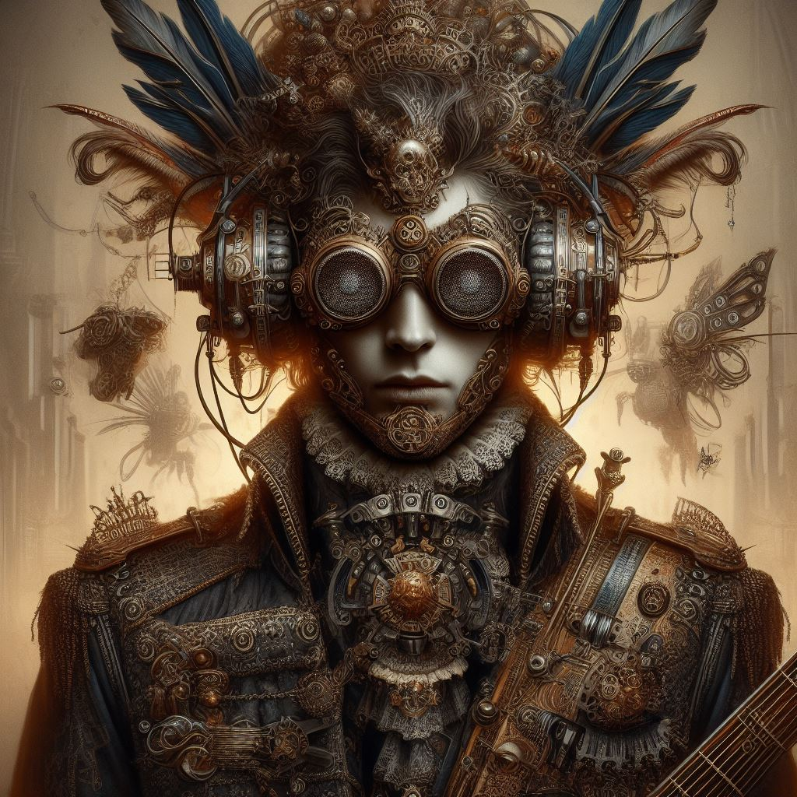
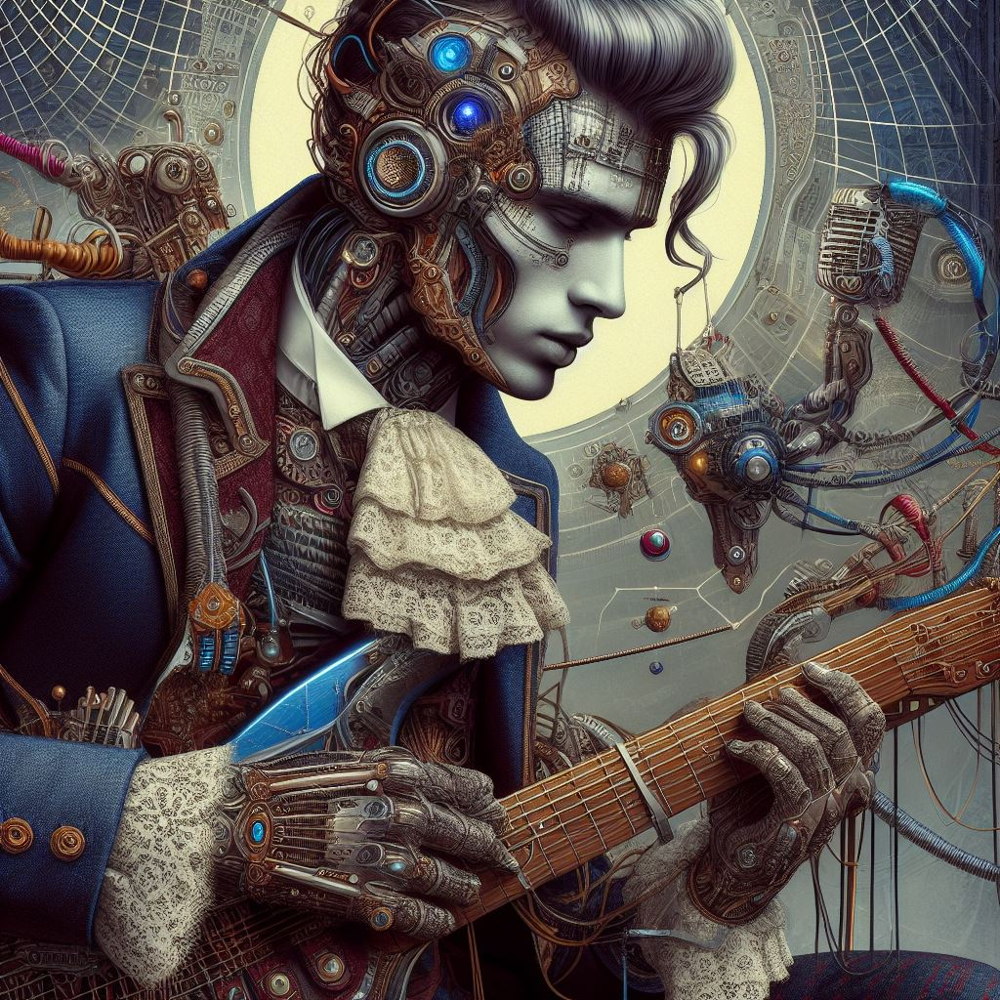
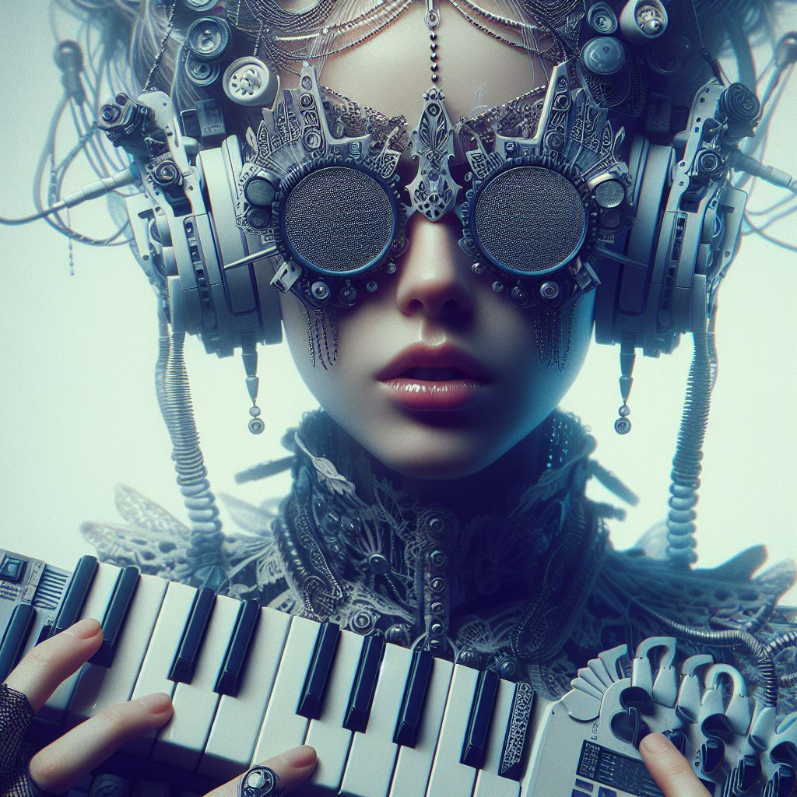
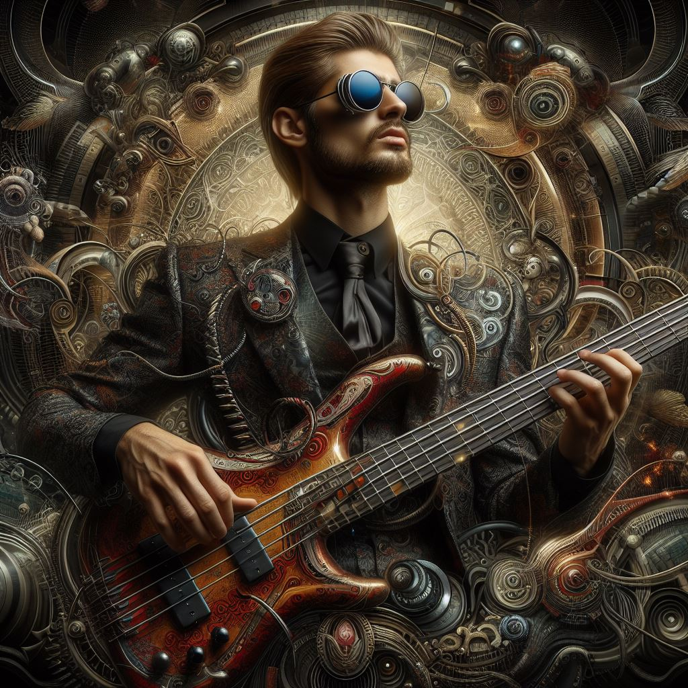
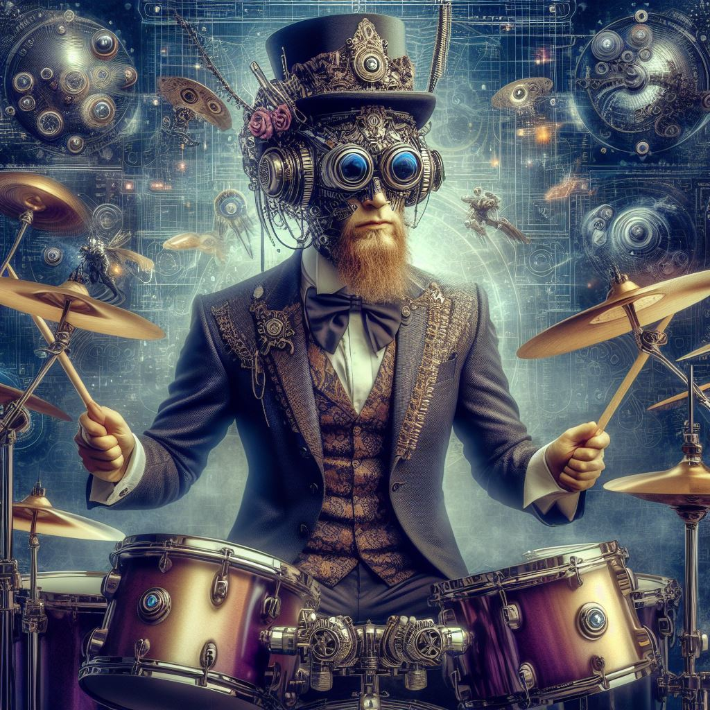

Sleep Paralysis are:
Sleep Paralysis is a metal band that blends the futuristic aesthetics
of cyberpunk with the ornate elegance of the Baroque era.
Their music transcends genres, offering a unique auditory experience that combines heavy,
industrial sounds with intricate melodies and haunting harmonies.
With their captivating stage presence and thought-provoking lyrics, Sleep Paralysis takes listeners on
a journey through dystopian landscapes and existential reflections.

Aria Darkwood (Vocals)
Aria Darkwood, with her mesmerizing vocals, is the frontwoman of Sleep Paralysis.
Her haunting voice carries the emotional depth of their lyrics,
drawing listeners into the band's dark and ethereal world.
Aria's stage presence is commanding,
embodying the enigmatic allure of Sleep Paralysis' music.

Vladimir Steele (Guitar)
Vladimir Steele is the mastermind behind the intricate guitar riffs
and blistering solos that define Sleep Paralysis' sound. With his technical prowess
and innovative approach to the instrument, Vladimir adds depth and
intensity to the band's compositions, seamlessly blending cyberpunk-inspired
distortion with Baroque-inspired melodies.

Cyberia synth (Synthesizers/Keyboards)
Cyberia Synth is the sonic architect responsible for the atmospheric textures and
electronic elements that permeate Sleep Paralysis' music. Their synthesizer melodies
and haunting keyboard arrangements create a futuristic soundscape
that transports listeners to a world where technology and artistry intersect.

Ryker Darkheart (Bass)
Ryker Darkheart's thunderous bass lines form the foundation of Sleep Paralysis' sound.
With his driving rhythms and commanding presence, Ryker anchors the band's
compositions, adding depth and intensity to their sonic landscape.

Lunar Echo (Drums)
Lunar Echo is the powerhouse behind Sleep Paralysis' rhythmic intensity.
Their precise and dynamic drumming drives the band forward, infusing each track with
energy and momentum. Lunar's intricate patterns and explosive fills
elevate Sleep Paralysis' music to new heights.
Together, Aria Darkwood, Vladimir Steele, Cyberia Synth, Ryker Darkheart, and Lunar Echo form Sleep Paralysis,
a band that defies conventions and pushes the boundaries of metal music.
With their unique blend of cyberpunk and Baroque influences, Sleep Paralysis invites listeners to explore
the depths of the human psyche and embrace the darkness within.